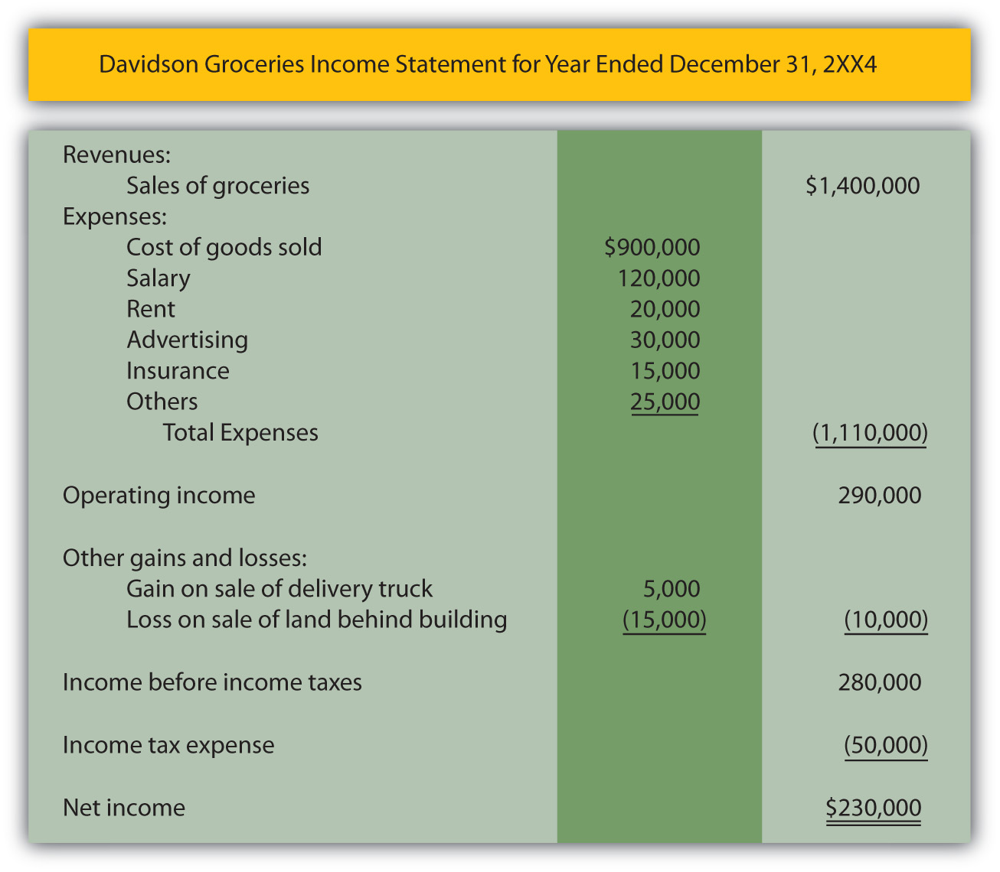

At the end of this section, students should be able to meet the following objectives:
Question: The revenues, expenses, assets, and liabilities reported by an organization provide data that are essential for decision making. The informational value of these figures enables a thorough analysis of an organization and its financial health and future prospects. How do outsiders learn of these amounts? How are financial data actually conveyed to interested parties? For example, a company such as Marriott International Inc. (the hotel chain) has possibly millions of current and potential shareholders, creditors, and employees. How does such a company communicate vital financial information to all the groups and individuals that might want to make some type of considered evaluation?
Answer: Businesses and other organizations periodically produce financial statements that provide a formal structure for conveying financial information to decision makers. Smaller organizations distribute such statements each year, frequently as part of an annual report prepared by management. Larger companies, like Marriott International, issue yearly statements but also prepare interim statements, usually on a quarterly basis.Financial statements for many of the businesses that have their capital stock traded publicly on stock exchanges are readily available on corporate Web sites. For example, the statements released by Marriott International can be located through the following path. The financial statements issued by most large companies will be found by using similar steps.• Go to http://www.marriott.com.• Click on “About Marriott” (probably at the bottom of the homepage).• Click on “Investor Relations.”• Click on “Financial Information.”• Click on “Financial Reports & proxy.”• Click on “Annual Report” (for the year desired). Regardless of the frequency of preparation, financial statements serve as the vehicle to report all the monetary balances and explanatory information required according to the rules and principles of U.S. generally accepted accounting principles (U.S. GAAP). Based on these standards, such statements are intended as a fairly presented portrait of the organization—one that contains no material misstatements. In simple terms, a company’s revenues, expenses, assets, and liabilities are reported to outsiders by means of its financial statements.
Typically, a complete set of financial statements produced by a business includes four separate statements along with comprehensive notes. When studied with knowledge and understanding, a vast array of information becomes available to aid decision makers who want to predict future stock prices, cash dividend payments, and cash flows.
The four financial statements prepared by Marriott International as of January 2, 2009, and the year then ended were presented in just four pages of its annual report (pages forty-three through forty-six) whereas the notes accompanying those statements made up the next twenty-seven pages. Although decision makers often focus on a few individual figures found in financial statements, the vast wealth of information provided by the notes should never be ignored.
Link to multiple-choice question for practice purposes: http://www.quia.com/quiz/2092635.html
Question: Assume that a financial investor is analyzing the latest income statement prepared by a company in hopes of deciding whether to buy its capital stock or, possibly, loan money to the company. Or, perhaps, a current employee must decide whether to stay with the company or take a job offer from another organization. Both of these individuals want to assess the company’s financial health and future prospects. Certainly, all the available financial statements need to be studied but, initially, this person is looking at the income statement. What types of financial data will be available on a typical income statement such as might be produced by a business like IBM, Apple, Papa John’s, or Pizza Hut?
Answer: The main content of an income statement is rather straightforward: a listing of all revenues earned and expenses incurred by the reporting organization during the period specified. As indicated previously in Chapter 2 "What Should Decision-makers Know So That Good Decisions Can Be Made about an Organization?", revenue figures disclose increases in net assets (assets minus liabilities) that were created by the sale of goods or services resulting from the primary operations of the organization. For IBM, revenues are derived from the sale and servicing of computers and the like (a total of nearly $104 billion in 2008) while, for Papa John’s International, the reported revenue figure (a bit over $1.1 billion) measures the sale of pizzas and related items.
Conversely, expenses are decreases in net assets incurred by a reporting company in hopes of generating revenues. For example, salaries paid to sales people for the work they have done constitute an expense. The cost of facilities that have been rented is also an expense as is money paid for utilities, such as electricity, heat, and water.
For example, IBM reported selling, general, and administrative expenses for 2008 of $23.4 billion. That was just one category of its expenses disclosed within the company’s income statement.Financial information reported by large publicly traded companies tends to be highly aggregated. Thus, the expense figure shown by IBM is a summation of many somewhat related expenses. Those individual balances would be available within the company for internal decision making. During the same period, Papa John’s reported salaries and benefits as an expense for its domestic company-owned restaurants of $158.3 million. Financial accounting focuses on providing information about an organization and both of these figures should help decision makers begin to glimpse a portrait of the underlying company. Accounting is often said to provide transparency—the ability to see straight through the words and numbers to gain a vision of the company and its operations.
Question: Is nothing else presented on an income statement other than revenues and expenses?
Answer: An income statement also reports gains and losses for the same period of time. A gain is an increase in the net assets of an organization created by an occurrence outside its primary or central operations. A loss is a decrease in net assets from a similar type of incidental event.
When Apple sells a computer to a customer, it reports revenue but if the company disposes of a piece of land adjacent to a warehouse, it reports a gain (if sold above cost) or a loss (if sold below cost). Selling computers falls within Apple’s primary operations whereas selling land does not. If Pizza Hut sells a pepperoni pizza, the transaction brings in assets. Revenue has been earned and should be reported. If this same company disposes of one of its old stoves, the result is reflected as either a gain or loss. Pizza Hut is not in the business of selling appliances. This classification split between revenues/expenses and gains/losses helps provide decision makers with a clearer portrait of what actually happened to the company during the reporting period.
An example of an income statement for a small convenience store is shown in Figure 3.1 "Income Statement". Note that the name of the company, the identity of the statement, and the period of time reflected are apparent. Although this is only an illustration, it is quite similar to the income statements created by virtually all business organizations in the United States and many other countries.
Figure 3.1 Income Statement
Link to multiple-choice question for practice purposes: http://www.quia.com/quiz/2092602.html
Question: A review of this sample income statement raises a number of questions. The meaning of balances such as salary expense, rent expense, advertising expense, and the like are relatively clear. These figures measure specific outflows or decreases in the company’s net assets that were incurred in attempting to generate revenue. However, the largest expense reported on this income statement is called cost of goods sold. What does the $900,000 cost of goods sold figure represent?
Answer: This convenience store generated sales of $1.4 million in Year 2XX4. Customers came in during that period of time and purchased merchandise at its sales price. That is the first step in the sale and is reflected within the revenue balance. The customers then took these goods with them and left the store; this merchandise no longer belongs to Davidson Groceries. In this second step, a decrease occurred in the company’s net assets. Thus, an expense has occurred. As the title implies, “cost of goods sold” (sometimes referred to as “cost of sales”) is an expense reflecting the cost of the merchandise that a company’s customers purchased during the period. It is the amount that Davidson paid for inventory items, such as apples, bread, soap, tuna fish, and cheese, that were then sold.
Note that the timing of expense recognition is not tied to the payment of cash but rather to the loss of the asset. As a simple illustration, assume Davidson Groceries pays $2 in cash for a box of cookies on Monday and then sells it to a customer for $3 on Friday. The income statement will show revenue of $3 (the increase in the net assets created by the sale) and cost of goods sold of $2 (the decrease in net assets resulting from the sale). Both the revenue and the related expense are recorded on Friday when the sale took place and the inventory was removed.
The difference in revenue and cost of goods sold is often referred to as the company’s gross profitDifference between sales and cost of goods sold; also called gross margin or markup., gross marginDifference between sales and cost of goods sold; also called gross profit or markup., or markupDifference between sales price and cost of goods sold on an item of inventory; also called gross profit or gross margin.. It is one of the reported figures studied carefully by decision makers. For this year, Davidson Groceries earned a gross profit of $500,000 ($1.4 million in revenues less $900,000 cost of goods sold). Its gross profit was 35.7 percent of sales ($500,000/$1.4 million).
For the year ending January 30, 2009, Lowe’s Companies Inc., the home improvement company, reported net sales revenues of $48.2 billion along with cost of sales of $31.7 billion. Thus, Lowe’s earned a gross margin (the company’s term) during that period of $16.5 billion. Sales of merchandise ($48.2 billion) exceeded the cost of those same goods ($31.7 billion) by that amount. Its gross profit percentage was 34.2 percent ($16.5 million/$48.2 million). Any potential investor or creditor will find such numbers highly informative especially when compared with the company’s prior years or with competing enterprises. For example, for the year ending February 1, 2009, the Home Depot Inc., a major competitor of Lowe’s Companies, reported net sales of $71.3 billion, cost of sales of $47.3 billion, and gross profit (the company’s term) of $24.0 billion. Its gross profit percentage was 33.7 percent ($24.0 million/$71.3 million). Such information allows decision makers to compare these two companies and their operations.
Link to multiple-choice question for practice purposes: http://www.quia.com/quiz/2092636.html
Question: In Figure 3.1 "Income Statement", revenues and expenses are listed first to arrive at an operating income figure. That is followed by gains and losses. This sequencing is appropriate since revenues and expenses relate to the primary or central operations of the business and gains and losses are created by more incidental events. Why then is income tax expense listed last, by itself, on the income statement and not with the other expenses?
Answer: State and federal income taxes cost businesses in the United States considerable sums of money each year. Exxon Mobil Corporation reported income taxes of $36.5 billion at the bottom of its 2008 income statement. The income tax figure is segregated in this manner because it is not an expense in a traditional sense. As previously described, an expense—like cost of goods sold, advertising, or rent—is incurred in order to generate revenues. Income taxes do not create revenues at all. Instead, they are caused by the company’s revenues and related profitability. Although referring to income taxes as an expense is common, probably a more apt title is “income taxes assessed by government.” The financial impact is the same as an expense (an outflow or decrease in net assets); thus, “income tax expense” is often used for labeling purposes. However, because the nature of this “expense” is different, the reported income tax figure is frequently isolated at the bottom of the income statement, separate from true expenses.
Financial information can be gathered about an organization but the resulting figures must then be structured in some usable fashion to be conveyed to interested decision makers. Financial statements serve this purpose. A typical set of financial statements is made up of an income statement, statement of retained earnings, balance sheet, statement of cash flows, and explanatory notes. The income statement reports revenues from sales of goods and services as well as expenses such as rent expense and cost of goods sold. Gains and losses that arise from incidental activities of a company are also included on the income statement but separately so that the income generated from primary operations is apparent. Income tax expense is reported at the bottom of the income statement because it is actually a government assessment rather than a true expense.